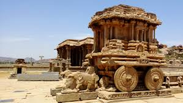

Tourist Guide
Hampi

Hampi, also referred to as the Group of Monuments at Hampi, is a UNESCO World Heritage Site located in east-central Karnataka, India. It became the centre of the Hindu Vijayanagara Empire capital in the 14th century. Chronicles left by Persian and European travellers, particularly the Portuguese, state Hampi was a prosperous, wealthy and grand city near the Tungabhadra River, with numerous temples, farms and trading markets. By 1500 CE, Hampi-Vijayanagara was the world's second-largest medieval-era city after Beijing, and probably India's richest at that time, attracting traders from Persia and Portugal. The Vijayanagara Empire was defeated by a coalition of Muslim sultanates; its capital was conquered, pillaged and destroyed by sultanate armies in 1565, after which Hampi remained in ruins.
Located in Karnataka near the modern-era city of Hosapete, Hampi's ruins are spread over 4,100 hectares (16 sq mi) and it has been described by UNESCO as an "austere, grandiose site" of more than 1,600 surviving remains of the last great Hindu kingdom in South